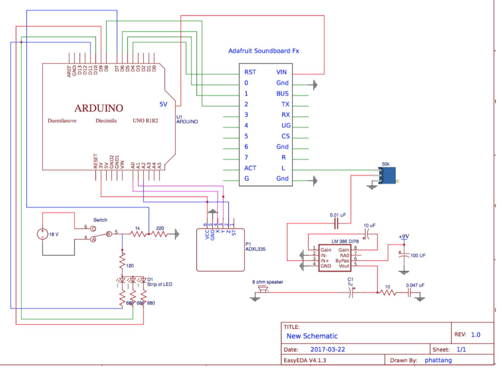

Lightsaber using Arduino
Written on March 22, 2017
Purpose: The goal of my project is to create a lightsaber that uses an array of RGB LEDs. The Arduino will be connected to the light bulbs and a potentiometer in order to change the color of the saber between RED, GREEN, and BLUE. For the sound, I will add a soundboard and accelerometer. Whenever the saber detects movement it will play a swinging sound when it is stationary it will him. There is also an activation sound for when you turn on the saber. Originally I wanted to also have a clashing sound played when the saber hits something but the soundboard was more difficult than anticipated.
Design: For the design I will get some PVC pipe for the hilt and a clear acrylic tube for the blade. Add the array of LEDs or a strip of LEDs inside the blade. For all the other components such as cables, Arduino, switch button, potentiometer, accelerometer, soundboard, and 8 ohm speakers. I will add inside the hilt. I will probably have to use an Arduino nano because of the size of the hilt. My first problem was that when I inserted the strip of LEDs, it didn’t looked right because they weren’t diffused. I used sandpaper to make the acrylic tube rougher and look foggy. I also wrapped the strip of LEDs around white blank paper to diffuse it, it looked a little tacky but it did the job. Next, I connected the strip to a mini breadboard that contains 680 ohm resistors for each color (RGB) and for the power supply of the strip. I connected two 9V batteries in parallel as the power source. I added a switch so I can control when to turn on the lights. I also wanted to control the power of the soundboard which I connected onto the arduino but I didn’t want to input 18V into the Arduino, so I used a voltage divider with a 1k ohm resistor and a 220 ohm resistor to bring down the voltage to about 3.25V. I then added a jumper cable from the middle leg of the divider to pin 7 of the Arduino. On that mini breadboard I included the accelerometer that is getting powered from the arduino on the 3V pin. The X,Y, and Z outputs of the accelerometer is connected to the analog pins of the Arduino, A0, A1, and A2, respectively.
Now when we move to the Arduino, I put a prototype shield on top of it so i have more room to play with. On the shield, I inserted the adafruit soundboard fx, which is responsible for playing the sound effects. To power the soundboard, I used the 5V and ground pins on the Arduino and connected it to the VIN and GRND pins on the soundboard. The soundboard also has a reset pin and pins numbered 0 - 9. Whenever the reset pin the connected to ground, it will reset the soundboard and when any of the numbered pins are connected to ground for 125 milliseconds, it will play the corresponding sound that is uploaded onto the soundboard. For example, if I want to play the file named T00 in the soundboard I will have to ground pin 0. And if I want to play the file named T01, I will have to ground pin 1 and so forth. Very straightforward, but the problem I ran into is that when the soundboard plays a sound, it will play it until the end before it plays the next sound. For my project I needed to interrupt the humming sound when a swing is detected, so I used the reset pin to reset the soundboard when I want to interrupt a sound. The sound kind of lags because of the reset time, but it was the best I can do. The reset pin is connected to the digital pin 4 on the Arduino. Then for the humming sound, which is pin 0 on the soundboard, is connected to pin 5 on the Arduino. The swinging sound, is pin 1 on the soundboard and pin 6 on the Arduino. The activation sound is pin 2 on the soundboard and connected to digital pin 8. Here’s a quick review of what we have so far, when the switch is pressed, it will connect the two 9V batteries to the LED strip to turn on the lights and turn on the soundboard. Also in the code, I added that when the switch is hit, it will play the activation sound (grounding pin 8). Next, the soundboard will play the humming sound, until the accelerometer reads a minimum difference within a delay time then it will play the swinging sound. I added a potentiometer onto the Arduino’s 5V pin and ground pin. The middle pin of the pot is connected to analog pin A3 to read values between 0 and 1023. I divided 1023 into thirds to have the LED strip change between three colors (RED, GREEN, and BLUE). The code implements that when the value of the pot is between 0 - 341, pin 9 will be grounded which lights up the red LEDs. If the value is between 342 and 682, pin 11 will be grounded and it lights up the blue LEDs. between 683 and 1023, pin 10 will be grounded and it will light up the green LEDs. The strip I used is a common anode, which takes an input voltage and lights up when the corresponding color lead is grounded. The next problem I ran into was that the soundboard I purchased was for earphones, so the volume on it was really low. I purchased a low voltage power amplifier (LM-386 op-amp) which has by default a gain of 20. I followed the schematics on the data sheet and got a gain of 200.
Electrical Schematic:
Arduino Code: